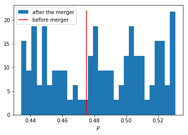
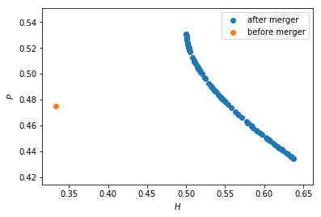

exam June 7th, 2018
The jupyter notebook of the exam can be found here. Right click on this link and then use something like "save link as".
price effects of mergers
We consider a merger in this notebook.
First we calculate the equilibrium with three firms, denoted by 1, 2 and 3. Then firms 2 and 3 merge so that we are left with 2 firms; denoted by 1 and 2.
We calculate the effects of the merger on the equilibrium price.
We start by importing the usual libraries.
import matplotlib.pyplot as plt import pandas as pd import numpy as np from scipy import optimize %matplotlib inline
The following code helps to calculate the equilibrium for the case with 3 firms. Note that you have seen similar code during the tutorials to calculate the equilibrium with 2 firms.
We assume that before the merger each firm has constant marginal costs equal to 0.3. We assume a simple linear (inverse) demand curve of the form \(p=1-Q\) where \(p\) denotes price and \(Q\) total output on the market. Total output equals the sum of each firm's output: \(Q= q_1 + q_2+q_3\).
c0 = 0.3 vector_c = [c0]*3 def p(Q): return 1 - Q def costs(q,c): return c*q def profits(q,Q_other,c): return p(q+Q_other)*q-costs(q,c) def reaction(Q_other,c): q1 = optimize.fminbound(lambda x: -profits(x,Q_other,c),0,1,full_output=1) return q1[0] def fixed_point_three_firms(vector_q,vector_c): return [vector_q[0]-reaction(vector_q[1]+vector_q[2],vector_c[0]), vector_q[1]-reaction(vector_q[0]+vector_q[2],vector_c[1]), vector_q[2]-reaction(vector_q[0]+vector_q[1],vector_c[2])]
- a) [0.5 points] Show that total equilibrium output equals 0.525. Derive the equilibrium price and Herfindahl index; denote these by
P0andH0resp.initial_guess_3 = [0,0,0] Q0 = np.sum(optimize.fsolve(lambda q: fixed_point_three_firms(q,vector_c), initial_guess_3)) P0 = p(Q0) H0 = 3*(1/3)**2 print(Q0) print(P0) print(H0)
0.525 0.475 0.3333333333333333
- b) [0.5 point] Define a function
fixed_point_two_firmswith the same structure as the functionfixed_point_three_firmsabove, except that it derives the equilibrium output levels for a duopoly (two firms). Test this function by showing that each of the two firms produces 0.3333 in case both firms have zero costs.def fixed_point_two_firms(vector_q,vector_c): return [vector_q[0]-reaction(vector_q[1],vector_c[0]), vector_q[1]-reaction(vector_q[0],vector_c[1])] optimize.fsolve(lambda q: fixed_point_two_firms(q,[0,0]), [0,0])
array([0.33333333, 0.33333333])
The Dutch competition authority, ACM, is asked to evaluate the effects of a merger between firms 2 and 3. Firms 2 and 3 claim that by merging they can reduce their constant marginal costs. But it is not clear by how much they will reduce their costs.
The ACM assumes that the marginal cost level of the merged firm is uniformly distributed between 0 and the current marginal cost level
c0. The merger will not affect the marginal cost level of firm 1 who does not merge. Firm 1's cost level remainsc0.The next cell generates a vector of cost levels for the merged firm, denoted
c_after_merger. Evaluate "c\_after\_merger" in a separate cell if you do not understand the command that defines it.Then it calculates the equilibrium output levels for (the non-merging) firm 1 and (the merged) firm 2.
Note that you need to specify
initial_guess.c_after_merger = np.random.uniform(0,c0,size = 100) initial_guess = [0.1,0.1] q1_after_merger = [optimize.fsolve(lambda q: fixed_point_two_firms(q,[c0,c]), initial_guess)[0] for c in c_after_merger] q2_after_merger = [optimize.fsolve(lambda q: fixed_point_two_firms(q,[c0,c]), initial_guess)[1] for c in c_after_merger]
- c) [0.5 points] Create a dataframe called
df_after_mergerwith three columns:c_merged_firm,output_non_merging_firm,output_merged_firmcontaining resp. the cost level of the merged firm, the output level of firm 1 and the output level of firm 2.columns = ['c_merged_firm','output_non_merging_firm','output_merged_firm'] df_after_merger = pd.DataFrame(columns=columns) for i in range(len(c_after_merger)): df_after_merger.loc[i] = [c_after_merger[i], q1_after_merger[i],q2_after_merger[i]] df_after_merger.head()
:RESULTS:
c_merged_firm output_non_merging_firm output_merged_firm 0 0.166673 0.188891 0.322218 1 0.223555 0.207852 0.284297 2 0.045117 0.148372 0.403255 3 0.047302 0.149101 0.401799 4 0.128894 0.176298 0.347404
df_after_merger = pd.DataFrame({'c_merged_firm':c_after_merger, 'output_non_merging_firm':q1_after_merger, 'output_merged_firm':q2_after_merger}) df_after_merger.head()
:RESULTS:
c_merged_firm output_non_merging_firm output_merged_firm 0 0.166673 0.188891 0.322218 1 0.223555 0.207852 0.284297 2 0.045117 0.148372 0.403255 3 0.047302 0.149101 0.401799 4 0.128894 0.176298 0.347404
- d) [0.5 points] Add three columns to the dataframe with resp. total equilibrium output on the market,
Q, equilibrium price,Pand the Herfindahl index,H.df_after_merger['Q']=df_after_merger.output_non_merging_firm+df_after_merger.output_merged_firm df_after_merger['P']=p(df_after_merger.Q) df_after_merger['H']=(df_after_merger.output_non_merging_firm/df_after_merger.Q)**2+(df_after_merger.output_merged_firm/df_after_merger.Q)**2 df_after_merger.head()
:RESULTS:
c_merged_firm output_non_merging_firm output_merged_firm Q \ 0 0.166673 0.188891 0.322218 0.511109 1 0.223555 0.207852 0.284297 0.492148 2 0.045117 0.148372 0.403255 0.551628 3 0.047302 0.149101 0.401799 0.550899 4 0.128894 0.176298 0.347404 0.523702 P H 0 0.488891 0.534024 1 0.507852 0.512064 2 0.448372 0.606748 3 0.449101 0.605204 4 0.476298 0.553374 - e) [0.5 points] Make a histogram of the equilibrium price
Pafter the merger. Also indicate in the histogram the equilibrium price before the mergerP0. Label the horizontal axis with \(P\).[hint: you may want to use matplotlib's
hist,vlinesandlegendto make this graph (e.g use google to find these functions); but feel free to use something else]plt.hist(df_after_merger.P, normed=True, bins=30, label='after the merger') plt.vlines(P0,0,22, color = 'red', label='before merger') plt.legend() plt.xlabel('$P$') plt.show()

- f) [0.5 points] Explain why sometimes the equilibrium price after the merger exceeds the equilibrium price before the merger and sometimes it is lower than the pre-merger price. [hint: there is a trade off between two effects, depending on which effect dominates, equilibrium price increases or decreases after the merger]
If the merged firms' costs are close to their old value
c0, then we only have the reduction in the number of firms and total output falls. In other words, due to a reduction in competition, the equilibrium price increases.If the merger firms' costs fall a lot due to the merger, this increases the merged firm's output level and hence increases total output on the market. This leads to a price reduction.
- g) [0.5 points] Make a graph with the Herfindahl index on the horizontal axis and the equilibrium price on the vertical axis. This is straightforward for \((H,P)\) after the merger as both values are in the dataframe. Add in another color, the pre-merger combination
(H0,P0)that we calculated above.plt.scatter(df_after_merger.H,df_after_merger.P,label='after merger') plt.scatter(H0,P0,label='before merger') plt.legend() plt.xlabel('$H$') plt.ylabel('$P$') plt.show()

- h) [0.5 points] Use the graph under g) to discuss the relation between the Herfindahl index and the equilibrium price. To illustrate, some people think that lower values of the Herfindahl index are associated with more competitive outcome. Would you agree with this?
On the one hand, the merger reduces the number of firms in the industry from 3 to 2; this increases the Herfindahl index and lowers competition.
On the other hand, considering the points after the merger: H is lowest when the firms are symmetric (both have costs c0). Then the price is high. As the cost level of the merged firm falls, it produces more output which reduces the price. But the asymmetry in output levels increases H.